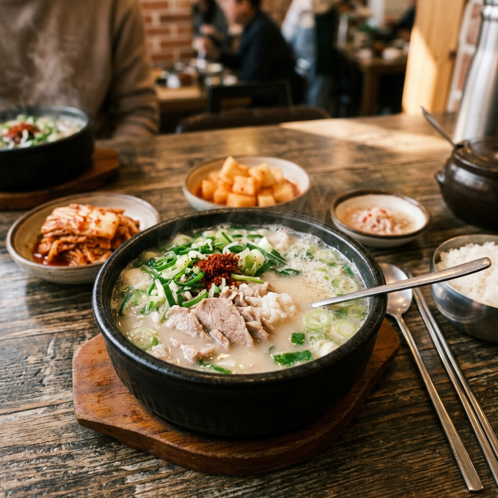
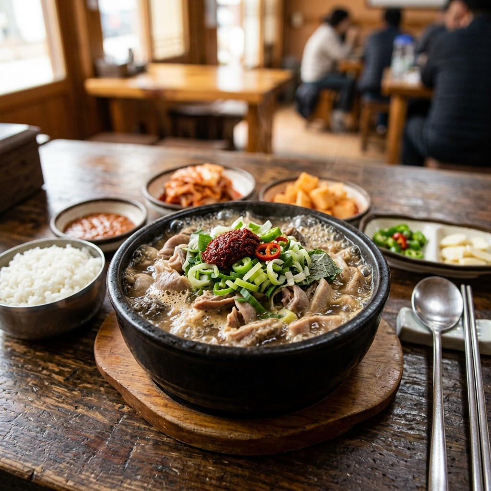
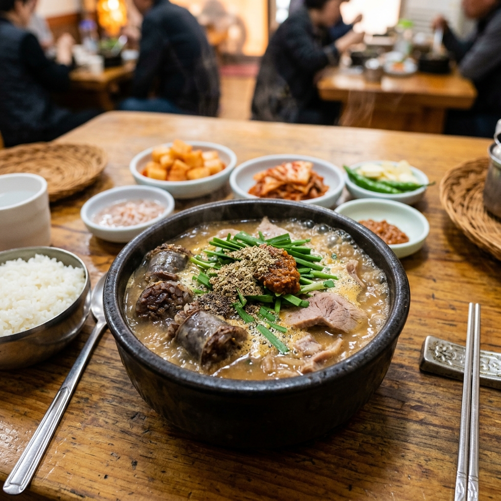

매일 12시간 이상 우려낸 진하고 깊은 국물, 넉넉하고 푸짐한 고향의 인심을 고향국밥에서 만나보세요.
10:00 - 22:00 (라스트오더 21:30)
광주광역시 광산구 금봉로 69
062-961-7360
가마솥에서 직접 끓여낸 진한 육수와 신선한 재료로 만든고향국밥의 자랑스러운 메뉴들입니다.

부드러운 살코기와 진한 사골 육수의 환상적인 조화. 남녀노소 누구나 즐기는 대표 메뉴.

쫄깃하고 신선한 내장을 듬뿍 넣어 씹는 맛이 일품인 든든한 국밥입니다.

속이 꽉 찬 찰순대와 고소한 국물이 어우러져 한 끼 식사로 손색이 없습니다.
편안한 식사를 위해 항상 매장을 청결하게 유지하고 있습니다.포장 주문 시 미리 전화주시면 바로 준비해 드립니다.
주소: 광주광역시 광산구 금봉로 69 (소촌동)
전화: 062-961-7360
주차: 매장 앞 또는 인근 골목 주차 가능
포장 여부: 전 메뉴 포장 가능